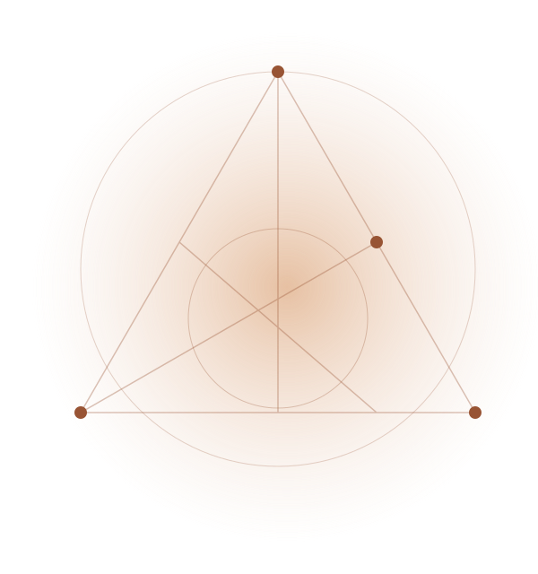
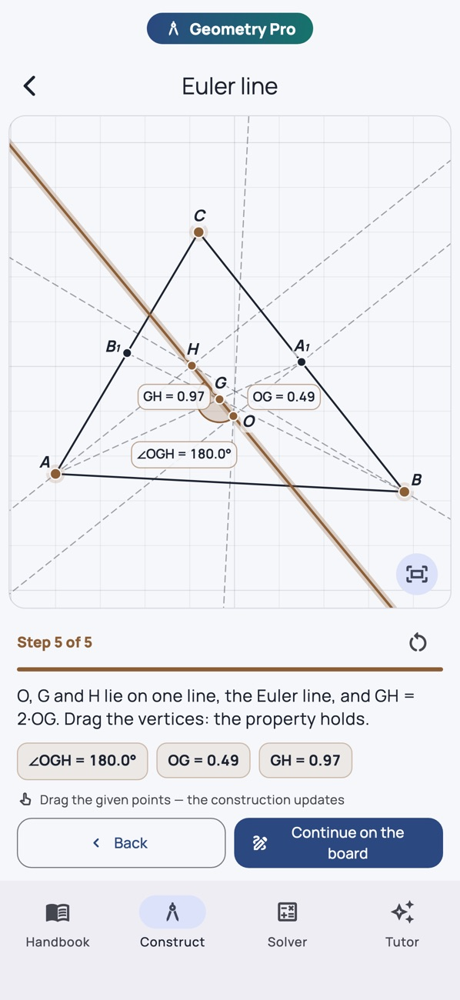

親自動手製作
放置點、畫線和圓，然後作平行線、角平分線和交點。拖動一個點，作圖就會隨之變化。


實際應用程式畫面
功能特色
放置點、畫線和圓，然後作平行線、角平分線和交點。拖動一個點，作圖就會隨之變化。
透過精確的陳述、圖示、範例和證明，探索平面幾何和立體幾何。
透過比例圖示解決三角形和立體問題。專業版還會提供推導過程、代入值以及結果背後的步驟。
看看應用程式
呈現真實螢幕畫面，讓您更了解應用程式的內容。
FAQ
開始使用前，先了解這些。
支援。安裝後，手冊和參考內容可以離線使用。Apple Intelligence 功能還需要相容裝置和已下載的系統模型。
應用程式可免費下載。不購買 Pro 也能使用參考手冊；額外學習工具和 AI 功能取決於各應用程式的 Pro 方案。目前選項請查看 App Store 和 App 內購買頁面。
不用。閱讀和使用手冊不需要 Apple Intelligence。AI 導師是選用功能，需要相容的 iPhone 或 iPad，並啟用 Apple Intelligence；支援語言取決於系統。
應用程式適用於 iPhone 和 iPad。最新系統版本和裝置需求請查看 App Store 頁面。
免費下載，可選購專業版功能
AI 導師是 Pro 功能，需要相容的 iPhone 或 iPad、iOS/iPadOS 26 或更新版本，並啟用 Apple Intelligence。可用性因語言和地區而異。AI 回答可能包含錯誤。